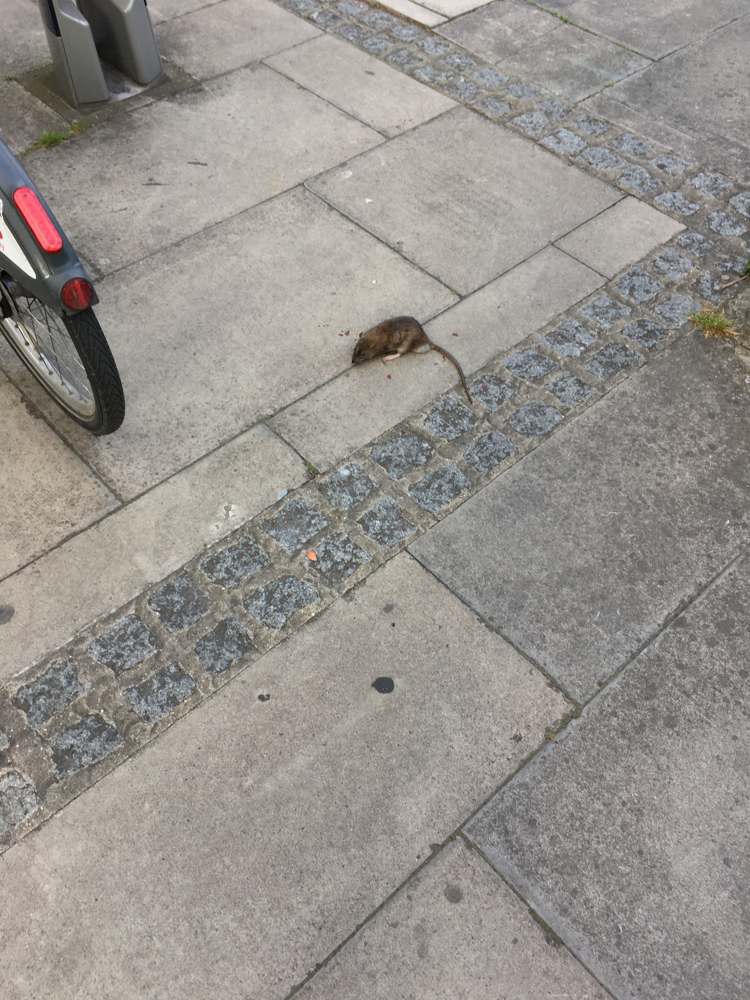

transitory dumping ground
Zola Richardson / Here Somehow / Zeaburd / SkyfishInstagram:
Vimeo:
Github:
This is a temporary spot for me to collate bits and pieces that are too much for my ig profile whilst I don’t get round to making a website.
Navigation
LONGFORM
Longer pieces of writing that don't fit anywhere else. Blog-like, I guess.
Desire Lines
SUN 04.08.24
“Angles, so many of them,to show me one thing”
A few weeks ago, fully preoccupied with my feelings whilst walking to a bus stop, I reflexively halted to capture the novelty of a rat right out in the open.
After getting closer I then realised that it’d been severely injured and was stuck wheezing surrounded by splatters of its own blood. It didn’t seem like I could do anything to help. Yet, the helplessness combined with seeing how much it was suffering in that moment put the rest of my concerns into perspective.
I’d recently attended a teaching on the ‘King of Prayers’, a Buddhist text which exemplifies vast aspiration in the face of suffering. Yet all I could do was refer to the title by name in my thoughts as I searched my mind for a solution. So I left the dying creature behind to two other people who had also taken to responding to it with their phones.
Opening up social media today after compiling some material to post and mostly seeing all the latest ‘unrest’ had me almost give up on sharing. Again, anything even mildly self-concerned can seem so silly in comparison to what goes on in the world. Often that sense of embarrassment keeps me from displaying much of myself at all. Wary of how I come across but also self conscious about appearing as such, I privately plan out my grid in advance then let things sit until compulsion builds up enough to counter the hesitancy.
I’ve also actually been in this same situation many times now, where I write out a load of thoughts as a sort of disclaimer to remedy my discomfort with self-focussed sharing. Usually I end up cutting it all out. Who knows why I feel like actually publishing it this time. Regardless, I generally prefer to keep many personal things only where those willing to seek will encounter them - and just let it be, quiet and undisturbed, if nobody comes looking.
When you don’t share (relatively) much, either it can add more weight to what’s communicated or create the impression that not much is being given away overall. Then there’s also the unnerving nature of tossing your lot into the communal void completely uncertain of who might notice or how each person will individually interpret it - especially when your social media engagement is comprised of a select few personal contacts (hello?). Plus once it comes to it, you might resort to keeping things a little cryptic - reluctant to let your true feelings be easily known - only for an unintended receiver to pick up on the undertones and make their own mistaken meaning from it.
So I can never quite be sure what I’m getting across. After already mulling over a few potential captions for the aforementioned post, I unexpectedly ended up writing a quick poem this morning and immediately settled on using it. Some of my most satisfying writing has come almost seemingly out of nowhere like that. Yet I suppose the pull to write something also germinated from a prior idea to use the following lines for the caption (from one of the many poems I’ve avoided sharing):
“Angles, so many of them,
to show me one thing”
This snippet in particular had been on my mind simply due to the visual theme I’d collated the photos on (angles), but the meaning of it in the context of the poem of origin is much more to do with desire. Which in the end has become the thread that runs through everything I’ve reflected on here in response to that post. There’s the desire to save, to solve, to be seen, to stay safe, to seek for something. Then there’s how destructive desire can be - whether it’s the unintended impacts on those who get pulled in from your whims or the violent eruptions that we’re seeing reported in the news. Lastly, there’s the actual poem I captioned the post with:
desire lines maybe
only slightly grown over
after the landscape’s been rearranged
or destinations have changed
but for now the earth still remembers
and so does my body
It’s funny the things we can want. Or what happens when we subconsciously seek something we think we want, only to find it was merely a proxy for something else but now irreversible trails of impact remain. How the compelling anticipation of an encounter that seems imminent can end up being sustained for over a decade. And how longstanding inclinations like that can ebb and flow with such extensive variation, leaving you so unsure of what to even make of it at points. That some interests become surprisingly short lived, and some just can’t seem to be shaken. But also, again, how much we can impact other people with our misfired desire. Be it on a delicate interpersonal level or riled up on a mass scale. It surely helps to be clearer on what we’re actually seeking and to be able to engage in direct communication with our intended audience when possible. Which I suppose is often where the challenge is.
Each time I look back at that photo (shared at the beginning of this post) I’m reminded of watching a helpless creature trapped on the brink of death and my evident uselessness, along with how trivial my personal dramas present in comparison. I’m reminded of all the people suffering profoundly in the world and consider my respective privileges with so much relief and grief. I think back to just how much I once struggled to have hope about my own life, how many years that heavy hopelessness dragged on for and the significance of finally finding the means to be tangibly optimistic.
And as someone who’s learnt to reckon with the disorientation that can come from finding yourself split across diverging realities running in parallel, I’ve been attempting to come to terms with an existence so expansive it can hold both complex world issues and our (my) petty personal concerns simultaneously. There’s just so much going on inside and outside always, all part of a larger whole.
Anyway, one thing I’ve had the desire to do for quite a while now is embark on a writing project I refer to as ‘Pathfinding in Pursuit of Positive Outcomes’. Hopefully I’ll actually progress with that soon as so much of what I think about leads me back to it. Maybe putting this up is a precursor to that.